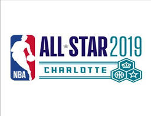
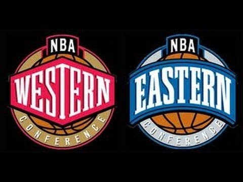

This NBA offseason, there have many crazy moves with many all-stars switching teams. Last season, there were 25 active all-stars; out of those 25, eight of them have been traded or signed with a new team in FA. These players look to help their new teams reach the ultimate goal. They are very notable players that can automatically have a huge impact on any team. Also, to check out the teams that can compete for the championship this season based on the many factors that result in victory.
From the East All - Stars, Kemba Walker was signed by the Boston Celtics in Free Agency for a 4 year, $141 Million deal. Kyrie Irving who was on the Celtics signed for the Brooklyn Nets on a 4 year, $141 million deal as well. These two point guards are some of the best in their conference and they look to lead their team to a new championship. D'Angelo Russell was another point guard that was in the Eastern Conference, but now moved to a team in the West. The young point guard was involved in a sign and trade deal that sent him to Golden State, 4 time winners in the last 5 years. He looks to win his first championship and looks to replace the void of Klay Thompson, who has an injury that will keep him out for the season. Finally, Kawhi Leonard signed for the LA Clippers in Free Agency after winning the Toronto Raptors' first championship. He inked a 3 year, $103 million deal and looks to bring the LA Clippers their first championship.
Image: Google Images
Image: Google Images
From the West All - Stars, Kevin Durant decided to sign with the Brooklyn Nets and join forces with Kyrie Irving after 4 successful years at Golden State. His contract is worth 4 years, $164 million and this is the first time he joins an Eastern Conference team. He looks to bring Brooklyn its first championship with Kyrie and build a future dynasty. Durant's former teammate Russell Westbrook was shipped off to Houston for Chris Paul. This ended his 11 year tenure at OKC and he joins with his former teammate James Harden, as they look to win their first championship together after failed attempts. Anthony Davis left New Orleans in a humongous trade deal with the Lakers as he joins up with LeBron. They look to bring LA back to the playoffs for the first time in 2013 and potentially winning a ring. Finally, Paul George got traded to the other LA team, the Clippers as he teams up with Kawhi Leonard. He looks to help Kawhi and the Clippers win their first championship and add a ring to his already packed resume.
Image: Google Images
Kemba's move to the Celtics helps provide them the replacement for Kyrie Irving, who went somewhere else himself. He has the offensive firepower that Kyrie brought to the Celtics. Although his defense is lackluster, he and a young core of Celtics players can still make it to the playoffs. This move will not guarantee a Celtics a spot in the Finals, but it does fill a huge void left by the departure of Irving.
Image: Google Images
Kyrie's departure to Brooklyn seems like a massive move on paper, although we still have to wait and see what the team is capable of with him leading it (for now). He is obviously a very talented player that knows how to win a championship. The Nets managed to sign him and ship of D-Lo, who Kyrie is way better than. Unfortunately, Durant is not playing this season which means that the Nets may not make the playoffs. Although, maybe Kyrie is capable of pulling something off with a great talented team that is thirsty for success.
Image: Google Images
Kevin Durant led the Warriors to 2 championships during his short tenure, but has now left for Brooklyn. Also, adding on Klay's injury, the Warriors need someone that can support Curry on the offense. They got D-Lo, a capable scorer that manages to play with the team and can either shoot or handle the ball when needed. The Warriors need offense this season and D-Lo can provide which can help the Warriors make the playoffs once again. Although, with Klay out, it's most likely they won't make the Finals; but we will have to wait and see.
Image: Google Images
You know you've struck gold when you sign Kawhi Leonard and that's what the Clippers felt the day they got him. Kawhi is one of the best players, if not the best player in the league. He led the Raptors to their first championship, managed all-star numbers on both sides of the court and manages to be the coolest guy off the court. He's in his hometown, and he's got a great team right by his side that it should be a certainty that the Clippers make the Finals for the first time in their franchise history.
Image: Google Images
The Nets signed Kevin Durant, the best scorer in the NBA who had led the Warriors to two championships during the last 3 seasons. He is in a weaker conference and has Kyrie by his side along with great role players. The only reason why this didn't get an A+ is because he's out for the season with an injury and we're not ready to see what the Nets are capable of. Although, it should be guaranteed that when he does come back, he and the team will set the league by storm!

Image: Google Images
After 11 years on the Thunder, Westbrook finally requested a trade and went on to sign with the Houston Rockets. He and James Harden have been on the same team before, so they have the chemistry. Although they are both MVP-caliber players, the problem is whether they can co-exist. They tend to have the ball a lot and that will be difficult when they're both on the court. The only way this move can work is if one of them is capable of taking the supporting role and knowing that they have put the team first.
Image: Google Images
AD finally got to leave New Orleans this offseason and it's all thanks to LeBron and the Lakers. He got his move to a top contender and now it seems that LA can compete once again. AD can complement LeBron perfectly either on the pick and roll, or being a leader when LeBron is off the court. If they can get it together and play it nicely with the role players, it should be an easy berth to the Finals for AD. Although, if the injury bug does strike on AD, problems will arise for the team.
Image: Google Images
Last season, Paul George was an MVP candidate and helped lead the Thunder to the playoffs, even with Westbrook struggling at times. Now that he's in LA, he doesn't have to worry so much anymore as he's got Kawhi. These two are the most consistent in the league and can both play as supporting players in order to help the team. PG manages to be a top two-way player, meaning he plays defense and offense with excellence. If he, Kawhi and the rest of the team can keep it together, they are certainly guaranteed a spot in the Finals.
Return to the top of the page.